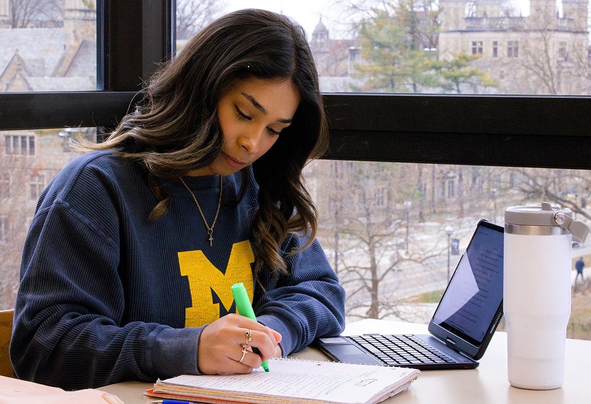
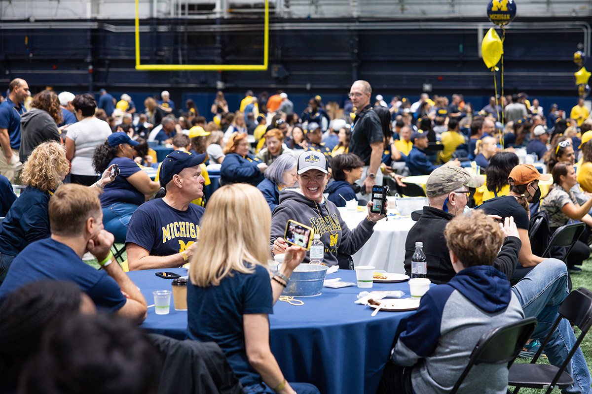
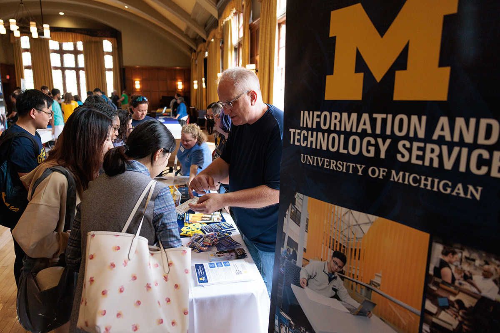
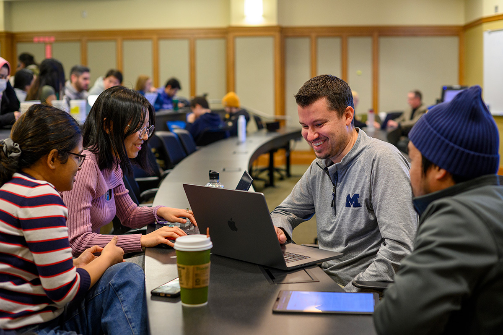

About Us
At CEW+, we navigate circumstantial barriers by providing academic, financial, and professional support to help you reach your personal potential. Established to support women through higher education, we lift up women and all underserved communities at U-M and beyond. Through career and education counseling, funding, workshops, events, and a diverse, welcoming community, we exist to empower. We are CEW+, and we’re here to help you reach your potential.
Events & Workshops
FINANCIAL EMPOWERMENT SERIES: #2 Making Confident Money Decisions
January 21, 2025 / 5:00 pm - 7:00 pm / CEW+, 330 E. Liberty Street, Ann Arbor, MI
CEW+Inspire Midweek Mindfulness Guided Sit
January 22, 2025 / 12:15 pm - 12:45 pm / Virtual
U-M vs. MSU: CEW+ Student & Family Basketball Outing 2025
January 25, 2025 / 11:00 am - 2:00 pm / Crisler Center Club, 333 E Stadium Blvd, Ann Arbor, MI 48109
FINANCIAL EMPOWERMENT SERIES: #3 Ultimate Financial Wellness
January 28, 2025 / 5:00 pm - 7:00 pm / CEW+, 330 E. Liberty Street, Ann Arbor, MI
Funding
At CEW+, we work to break down barriers and increase access through funding. For U-M students, staff, faculty, and surrounding community, we offer opportunities for scholarships, emergency grants, sponsorships, fellowships, and more for a range of situations and life circumstances.
Scholarships for U-M Students
Target Students: Undergraduate, Graduate, Staff, Community
For: Childcare, Living Expenses, Research, Travel, Tuition
CEW+ Fellowships
Target Students: Graduate
For: Research, Travel
Emergency Funding
Target Students: Undergraduate, Graduate
For: Emergencies, Unexpected, Expenses
Graduation Grant Program
Target Students: Undergraduate, Graduate
For: Tuition, Unexpected, Expenses
Co-Sponsorship Funding | Frances & Sydney Lewis Visiting Leaders Fund
Target Students: Undergraduate, Graduate, Faculty, Staff
For: Events
Career & Education Counseling
Schedule an Appointment
We offer career, education, and emergency funding counseling appointments in person, over the phone, or via Zoom. In-person counseling appointments are available on Wednesdays, Thursdays, and Fridays. Zoom and phone appointments are available Monday through Friday. There are three ways to schedule an appointment:
- Fill out this online form. A member of our team will be in touch (via phone or email – your choice) to formally schedule your appointment within 24 hours of the next business day once the form is submitted and reviewed.
- Call 734-764-6360 between 8:30 am and 4:30 pm Monday-Friday. If you get voicemail, please leave a message and we will return your voicemail as quickly as possible.
- Email us at cew.appts@umich.edu. Please be advised that depending on response rates to emails, you may not get the first available appointment offered.